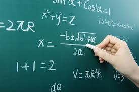

En pensamiento matemático desarrollo habilidades de razonamiento lógico, análisis profundo y resolución de problemas que me permiten enfrentar distintas situaciones de manera ordenada, estructurada y crítica. Aprendo a trabajar con operaciones básicas y avanzadas como suma, resta, multiplicación, división, fracciones, porcentajes, potencias, raíces, proporciones y ecuaciones algebraicas, entendiendo tanto el procedimiento como la lógica que hay detrás de cada resultado. También estudio cómo interpretar gráficas, tablas, diagramas y expresiones matemáticas para comprender mejor la información numérica y analizar datos con mayor precisión y objetividad. Esta materia me enseña a identificar patrones, reconocer regularidades, establecer relaciones entre variables y comprobar resultados para asegurarme de que sean correctos y coherentes. Además, aplico las matemáticas en situaciones reales como calcular gastos personales, organizar un presupuesto mensual, medir distancias, distribuir tiempos, comparar precios, calcular descuentos o analizar estadísticas que aparecen en noticias y redes sociales. A través de la práctica constante desarrollo disciplina, paciencia y perseverancia, ya que muchas veces es necesario intentar diferentes métodos hasta encontrar la solución adecuada. También aprendo a explicar mis procedimientos con claridad, justificar cada paso que realizo y defender mi razonamiento con argumentos sólidos y bien fundamentados. El pensamiento matemático fortalece mi capacidad de concentración, mejora mi memoria y me ayuda a mantener la atención en procesos largos y detallados. Asimismo, fomenta mi pensamiento crítico, ya que no solo acepto un resultado, sino que lo cuestiono, lo verifico y analizo si existe otra forma más eficiente de resolverlo. Esta materia no solo contribuye a mi rendimiento académico, sino que también me prepara para tomar decisiones responsables en la vida cotidiana, basadas en datos, análisis y lógica, lo que me da mayor seguridad y confianza en mí mismo al enfrentar nuevos retos. Además, me impulsa a ser más organizado, a planificar mejor mis actividades y a comprender que el esfuerzo constante es clave para lograr buenos resultados tanto en la escuela como en mi vida personal.
